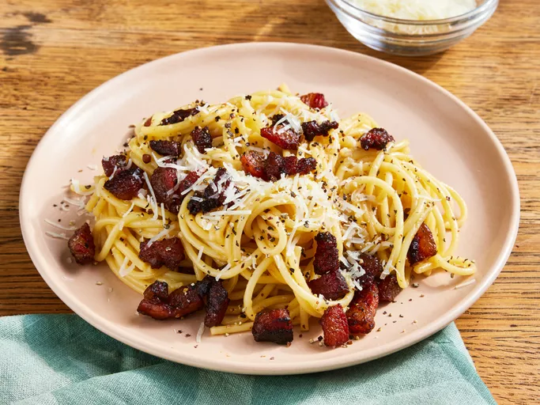

Spaghetti alla Carbonara

Spaghetti alla Carbonara - A delicious Italian dishe
Carbonara is made with guanciale (cured pork), eggs, Pecorino Romano cheese, spaghetti pasta,
and lots of black pepper. Italians don't add extra ingredients like cream, milk, garlic, or
onions. Try this recipe if you want to make an authentic, creamy carbonara that comes
straight from Italy, where I live. Buon appetito!
Ingredients
- Oil: This traditional Italian recipe starts with olive oil.
-
Guanciale: Buy guanciale (or cured pork cheek) at your local butcher. If you can’t find
it, you can substitute unsmoked bacon or pancetta.
-
Spaghetti: Use store-bought or homemade spaghetti noodles. If you like, you can
substitute bucatini for the spaghetti.
- Eggs: Three large eggs add richness and flavor.
-
Cheese: Opt for hand-shredded Pecorino Romano cheese. You can substitute Parmesan, if
preferred.
-
Seasonings: This flavorful spaghetti alla carbonara is simply seasoned with salt and
pepper.
Directions
- Cook the pork in olive oil until browned and crispy, then drain on paper towels.
- Boil the spaghetti in salted water. Drain and return to the pot. Let cool.
- Whisk the eggs, 1/2 of the cheese, and some pepper in a bowl until smooth.
- Pour the egg mixture over the pasta, stirring quickly, until creamy.
- Stir in the pork, then top with the remaining cheese and more black pepper.
Notes and tips from the chef:
-
Ask somebody to hold the pot so you can stir pasta quickly while pouring the egg mixture
over it.
-
Please note the addition of reserved pasta water when using the magazine version of this
recipe.